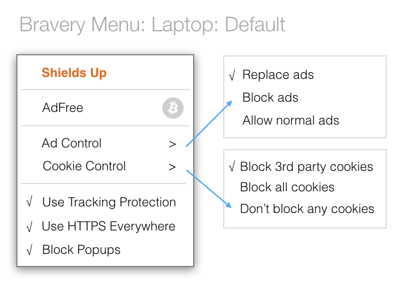
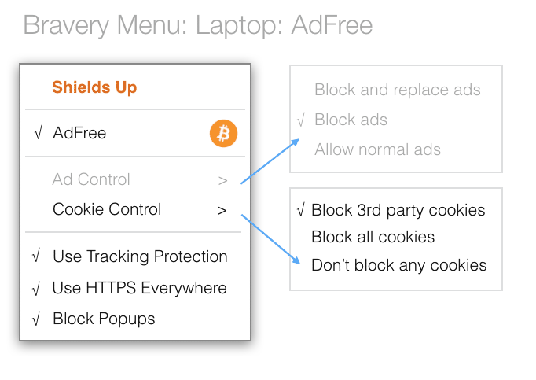

- By Marshall T. Rose and Brendan Eich
- Brave Software
- Posted March 31, 2016
Brave's Payment Spec Out for Developer Input
At Brave Software, we love browsers. We love using them and we love coding them. As the user interface to the Web, we know how important browsers are to the Internet. And – if you've been following the story of Brave Software – you know that we are very concerned about anonymity, privacy and security. In particular, ad tracking and malvertising have become modern day threats. Even if some people don't care about being tracked, they do care about malware being delivered to their computer or mobile device via an ad. Furthermore, the entire ad network infrastructure constitutes an attack upon low latency and efficient use of network resources: numerous redirects increase network traffic and make it difficult for the browser to render pages quickly and efficiently, particularly on mobile devices.
In two previous posts, we've discussed a better way to do ads: ads that are anonymous and private, ads that do not involve tracking. We know and respect that content on the Internet is largely advertiser supported, so our goal is not to remove advertising, but to put you back in control. Our architecture to do just that is – no surprise – an inversion of the traditional browser advertisement model. The traditional model treats the browser as a "silent partner". You are tracked by multiple third parties as you browse across different sites. Those parties build sophisticated (yet annoyingly incomplete) profiles in private clouds, and then some party (often distinct from the tracker) serves ads based on those profiles.
Our model is different: we call it the anti-cloud. We're not against cloud computing per se (of course!). However, we are very concerned about what and how much of our users’ data goes into the cloud and what the cloud does with that information. So, in Brave's anti-cloud model, all of your detailed information is kept only in the browser. Full stop, end of discussion. Our roadmap includes encrypting and backing up this information across your devices, but our servers will not see your data in the clear.
When non-intrusive ad slots are detected, the Brave Browser contacts the Brave Ad Network and requests ads to fill those slots. The Brave Browser maps browsing history to a fixed set of general "interest" categories. A subset of those categories are combined with categories based on the context of the current page and possibly some "decoy" categories. No other information is disclosed and no unique or persistent identifiers are used. The Brave Browser then selects appropriate ads to display from the list returned by the Brave Ad Network and either ignores the remainder or caches them for later use.
In order to provide aggregated reporting to our partners, Brave Software will operate services in the cloud, but these services are being designed, first and foremost, with anonymity, privacy, and security in mind. As we design these anonymous services, we will blog about them before we implement them, to gather review from interested experts around the world.
Today we are discussing the Brave Ledger, a Bitcoin-based micropayments system for users and publishers. As part of our open source approach, we are sharing the specification with developers for comment and discussion. The code is currently being written, and we expect to revise the code based on feedback. At present, we are planning on having everything running (and released as open source) in our 1.0 Development release later in May.
Let's start with the basics. The Brave Browser operates in either ad-replacement or ad-freemode.


(As discussed in an earlier post, Brave users may also elect only to block ads and trackers if they wish; or to disable all blocking when testing; but default settings matter at scale, because most users don’t change them.) If the browsing experience is ad-free, then third-party advertisements are not displayed by the Brave Browser; otherwise, in ad-replacement mode, the Brave Browser replaces candidate third-party advertisements with faster, safer ads that loadEach mode has a different economic model and some bells and whistles:
- For ad-free mode, you pay a monthly fee in Bitcoin (BTC). Once the BTC transfer occurs, the Brave Browser transmits an anonymous-but-accountable summary of your top 10 sites by weighted average (e.g., if you went to "wsj.com" twice as much as "espn.com", then the weight for the first site is twice as much as the second site). Each day, the Brave Ledger tallies up the payments and sites viewed and "crunches the numbers". The payments sum (less a nominal processing fee, say 5%) is then divided by the sum of weights in order to determine the payment ratio, and then the payment to each publisher is calculated by multiplying the ratio by the weight. By way of example, if the total revenue from ad-free users was 1000.00BTC, then Brave Software would receive 50.00BTC, a site receiving 10% of the total views would receive 95.00BTC, a site receiving 5% of the total views would receive 47.50BTC, a site receiving 1% of the total views would receive 9.50BTC, and so on.
- The Brave Browser will have a preferences panel that lets you decide which sites should be supported. You can even fiddle with the weights if you wish. For example, you might prefer to pay your top 10 sites equally, or you might prefer to exclude a particular site or two, and so on. (We’re still thinking about the most intuitive ways to let you control this, so the design details aren’t yet decided.)
- For ad-replacement mode, once an ad campaign is reconciled and our advertising partners pay us, the total views from the ad-replacement users are aggregated into a weighted list for publishers. From the total payment, our ad-matching partner takes a share (15%), we take our share (15%), we reserve the user revenue share of the total payment (15%) for ad-replacement users, and the remaining amount is allocated to the publishers (e.g., 55%). The payment to each publisher is then calculated using the weighted-ratio method. In order to enhance privacy, the payment to each ad-replacement user is calculated independently of the actual ad impressions served to that user – Brave Software does not keep track of which users were served which impressions.
- So, what happens when you're in ad-replacement mode? The Brave Ledger makes a transfer of the user revenue share to your Brave wallet! You have two choices: you can "donate" the funds to your favorite sites (this is the automated default); or you can transfer the funds to another Bitcoin wallet and spend them yourself. However, in order to take money out of the system, Anti-money laundering (AML) and Know your customer (KYC) regulations require that Brave Software verifies your identity. If you choose to verify your identity, then you'll need to demonstrate control of a phone number and an email address. Even so, there will be no way for Brave Software to correlate your browsing history with payments to your wallet.
- Publishers (the sites you visit) will also have to verify their wallets to get paid, and the difficulty of validation will – owing to AML and KYC regulations – be more stringent, but proportional to the size of the publisher. One of the nice features of the ad-free model is that accounting is entirely transparent – everyone (users and publishers) can examine the BTC blockchain and see the transfers going to and from the Brave Software escrow accounts. (There are many wonderful advantages to using Bitcoin for the Brave Ledger, but that’s for a future blog post… we promise!) Note also that because most users don’t change defaults, most users will default-pay their top sites, and so the aggregate share to publishers through the system is 70% of ad revenue.
Although we talk about being in either ad-free or ad-replacement mode, that's a bit of a simplification: the preferences panel will also let you designate certain sites as being ad-free and everything else as ad-replacement. Indeed as noted above and in that previous post, you can be “ad-free for free” – while we think that content should be paid for, we also realize that not everyone shares this view (although we do think that our view is the majority opinion).
At this point, you're probably wondering how the anonymous-but-accountable part actually works. You'll have to read the specification for all the details! But here's the thumbnail: the Brave Ledger uses Anonize, which enables the Brave Browser and Ledger to agree on authentic user behavior without linking that behavior to users, browsers, or wallets, through the "magic" of Zero Knowledge Proofs!